Chapter 9 Statistical Summaries and Tests
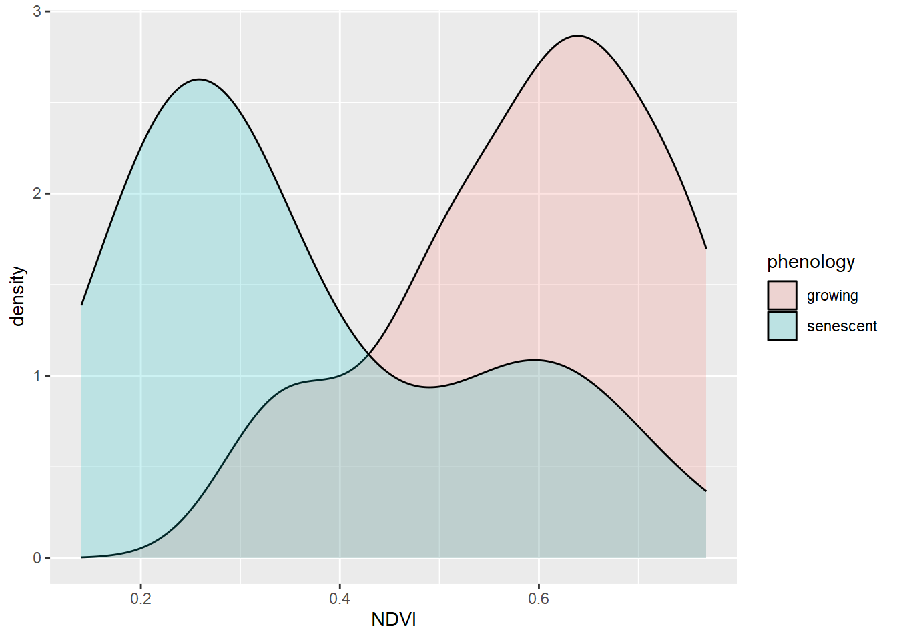
9.1 Goals of Statistical Analysis
To frame how we might approach statistical analysis and modeling, there are various goals that are commonly involved:
To understand our data
- nature of our data, through summary statistics and various graphics like histograms
- spatial statistical analysis
- time series analysis
To group or classify things based on their properties
- using factors to define groups, and deriving grouped summaries
- comparing observed vs expected counts or probabilities
To understand how variables relate to one another
- or maybe even explain variations in other variables, through correlation analysis
To model behavior and maybe predict it
- various linear models
To confirm our observations from exploration (field/lab/vis)
- inferential statistics e.g. difference of means tests, ANOVA, \(\chi^2\)
To have the confidence to draw conclusions, make informed decisions
To help communicate our work
These goals can be seen in the context of a typical research paper or thesis outline in environmental science:
Introduction
Literature Review
Methodology
Results
- field, lab, geospatial data
Analysis
- statistical analysis
- qualitative analysis
- visualization
Discussion
- making sense of analysis
- possibly recursive, with visualization
Conclusion
- conclusion about what the above shows
- new questions for further research
- possible policy recommendation
The scope and theory of statistical analysis and models is extensive, and there are many good books on the subject that employ the R language, including sources that focus on environmental topics like water resources (e.g. Helsel et al. (2020)). This chapter is a short review of some of these methods and how they apply to environmental data science.
9.2 Summary Statistics
Summary statistics such as mean, standard deviation, variance, minimum, maximum, and range are derived in quite a few R functions, commonly as a parameter or a sub-function (see mutate). An overall simple statistical summary is very easy to do in base R:
## site site # tree Date
## Length :180 Min. :1.000 Length :180 Min. :2006-11-08
## N.unique : 8 1st Qu.:2.000 N.unique : 2 1st Qu.:2006-12-07
## N.blank : 0 Median :4.000 N.blank : 0 Median :2007-01-30
## Min.nchar: 3 Mean :4.422 Min.nchar: 3 Mean :2007-01-29
## Max.nchar: 3 3rd Qu.:6.000 Max.nchar: 3 3rd Qu.:2007-03-22
## Max. :8.000 Max. :2007-05-07
##
## month rain_mm rain_subcanopy slope
## Length :180 Min. : 1.00 Min. : 1.00 Min. : 9.00
## N.unique : 7 1st Qu.:16.00 1st Qu.:16.00 1st Qu.:12.00
## N.blank : 0 Median :28.50 Median :30.00 Median :24.00
## Min.nchar: 8 Mean :37.99 Mean :34.84 Mean :20.48
## Max.nchar: 9 3rd Qu.:63.25 3rd Qu.:50.00 3rd Qu.:27.00
## Max. :99.00 Max. :98.00 Max. :32.00
## NAs :36 NAs :4
## aspect runoff_L surface_tension runoff_rainfall_ratio
## Min. :100.0 Min. : 0.000 Min. :28.51 Min. :0.00000
## 1st Qu.:143.0 1st Qu.: 0.000 1st Qu.:37.40 1st Qu.:0.00000
## Median :196.0 Median : 0.825 Median :62.60 Median :0.03347
## Mean :186.6 Mean : 2.244 Mean :55.73 Mean :0.05981
## 3rd Qu.:221.8 3rd Qu.: 3.200 3rd Qu.:72.75 3rd Qu.:0.08474
## Max. :296.0 Max. :16.000 Max. :72.75 Max. :0.42000
## NAs :8 NAs :44 NAs :89.2.1 Summarize by group: stratifying a summary
In the visualization chapter and elsewhere, we’ve seen the value of adding symbolization based on a categorical variable or factor. Summarizing by group has a similar benefit, and provides a tabular output in the form of a data frame, and the tidyverse makes it easy to extract several summary statistics at once. For instance, for the euc/oak study, we can create variables of the mean and maximum runoff, the mean and standard deviation of rainfall, for each of the sites. This table alone provides a useful output, but we can also use it in further analyses.
eucoakrainfallrunoffTDR %>%
group_by(site) %>%
summarize(
rain = mean(rain_mm, na.rm = TRUE),
rainSD = sd(rain_mm, na.rm = TRUE),
runoffL_oak = mean(runoffL_oak, na.rm = TRUE),
runoffL_euc = mean(runoffL_euc, na.rm = TRUE),
runoffL_oakMax = max(runoffL_oak, na.rm = TRUE),
runoffL_eucMax = max(runoffL_euc, na.rm = TRUE),
)## # A tibble: 8 × 7
## site rain rainSD runoffL_oak runoffL_euc runoffL_oakMax runoffL_eucMax
## <chr> <dbl> <dbl> <dbl> <dbl> <dbl> <dbl>
## 1 AB1 48.4 28.2 6.80 6.03 6.80 6.03
## 2 AB2 34.1 27.9 4.91 3.65 4.91 3.65
## 3 KM1 48 32.0 1.94 0.592 1.94 0.592
## 4 PR1 56.5 19.1 0.459 2.31 0.459 2.31
## 5 TP1 38.4 29.5 0.877 1.66 0.877 1.66
## 6 TP2 34.3 29.2 0.0955 1.53 0.0955 1.53
## 7 TP3 32.1 28.4 0.381 0.815 0.381 0.815
## 8 TP4 32.5 28.2 0.231 2.83 0.231 2.839.2.2 Boxplot for visualizing distributions by group
We’ve looked at this already in the visualization chapter, but a Tukey boxplot is a good way to visualize distributions by group. In this soil CO2 study of the Marble Mountains (Davis et al. 2001) (Figure 9.1), some sites had much greater variance, and some sites tended to be low vs high (Figure 9.2).
soilCO2_97$SITE <- factor(soilCO2_97$SITE)
ggplot(data = soilCO2_97, mapping = aes(x = SITE, y = CO2pct)) +
geom_boxplot()
FIGURE 9.1: Tukey boxplot by group
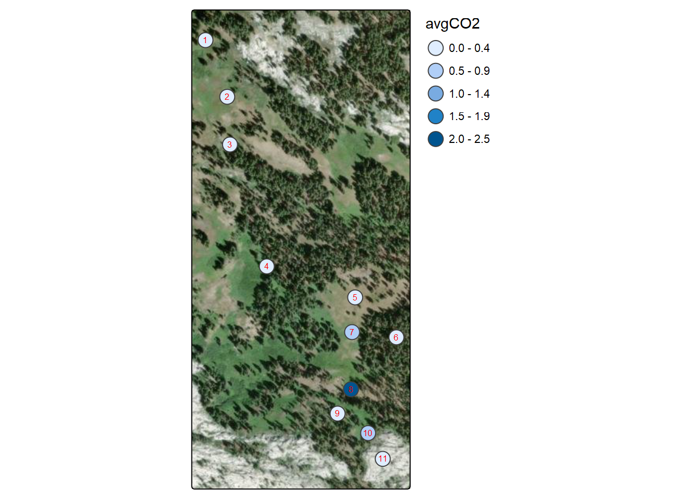
FIGURE 9.2: Marble Mountains average soil carbon dioxide per site
9.2.3 Generating pseudorandom numbers
Functions commonly used in R books for quickly creating a lot of numbers to display (often with a histogram 4.3.1) are those that generate pseudorandom numbers. These are also useful in statistical methods that need a lot of these, such as in Monte Carlo simulation. The two most commonly used are:
runif()generates a vector ofnpseudorandom numbers ranging by default frommin=0tomax=1(Figure 9.3).rnorm()generates a vector ofnnormally distributed pseudorandom numbers with a defaultmean=0andsd=0(Figures 9.4 and 9.5)
Figure 9.6 shows both in action as x and y.
x <- as_tibble(runif(n=1000, min=10, max=20))
names(x) <- 'x'
ggplot(x, aes(x=x)) + geom_histogram()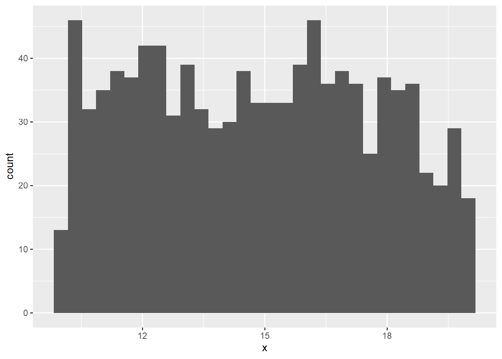
FIGURE 9.3: Random uniform histogram
y <- as_tibble(rnorm(n=1000, mean=100, sd=10))
names(y) <- 'y'
ggplot(y, aes(x=y)) + geom_histogram()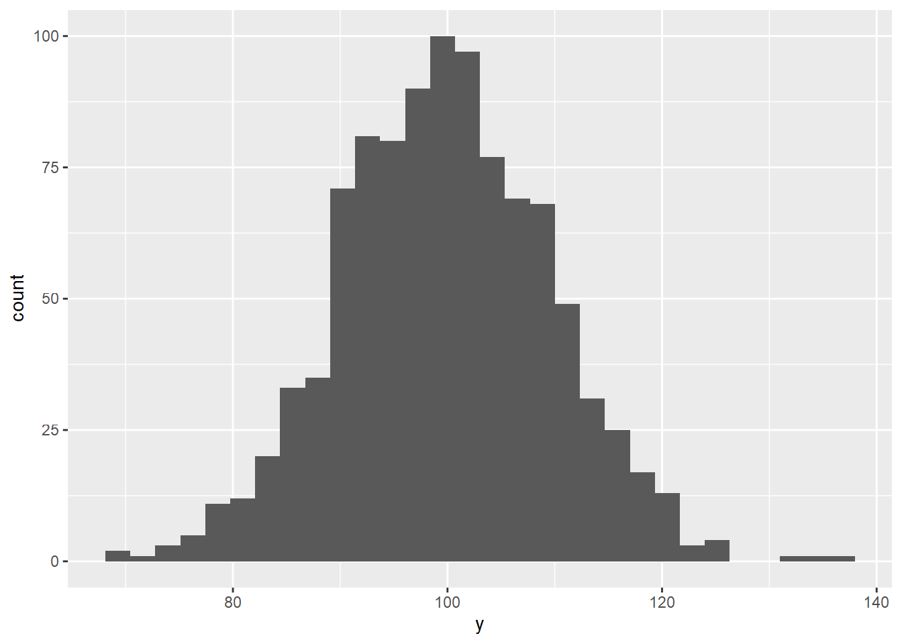
FIGURE 9.4: Random normal histogram
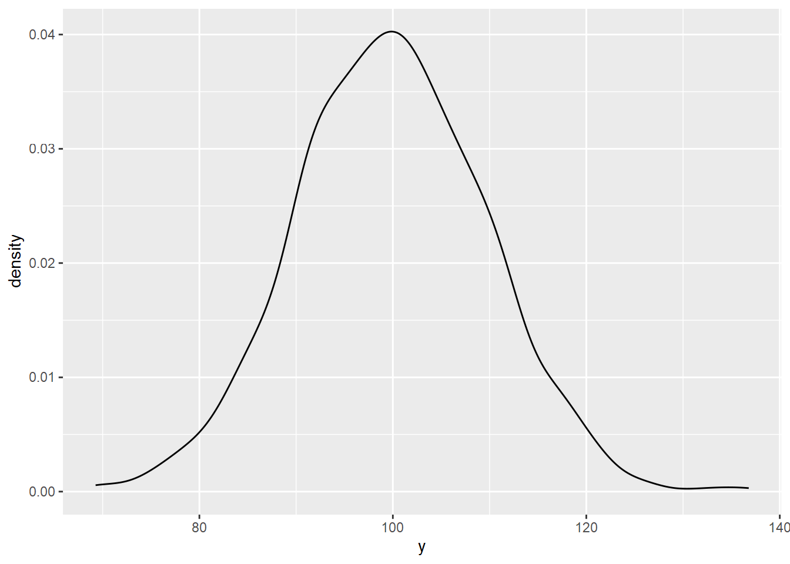
FIGURE 9.5: Random normal density plot
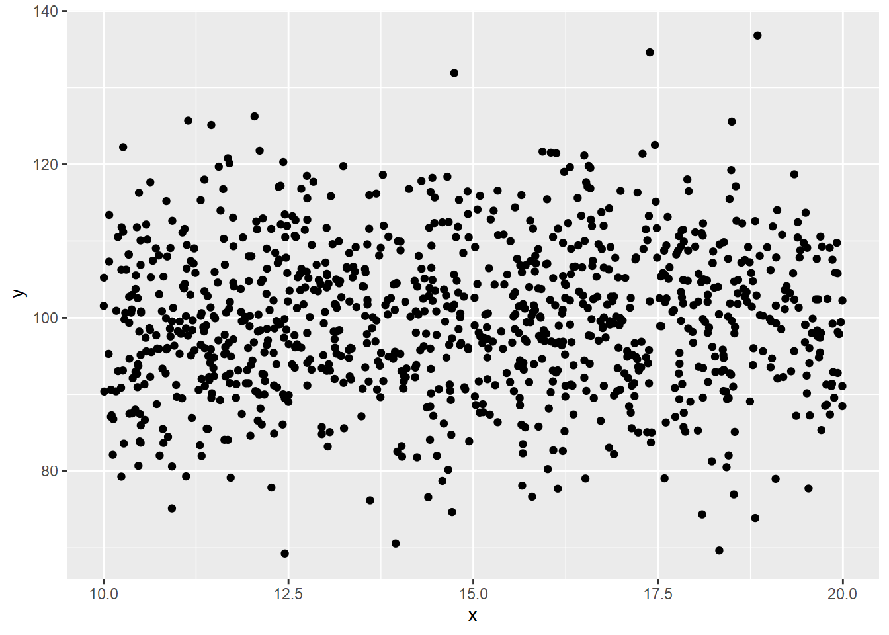
FIGURE 9.6: Random normal plotted against random uniform
9.3 Correlation r and Coefficient of Determination r2
In the visualization chapter, we looked at creating scatter plots and also arrays of scatter plots where we could compare variables to visually see if they might be positively or negatively correlated. A statistic that is commonly used for this is the Pearson product-moment correlation coefficient or r statistic.
We’ll look at the formula for r below, but it’s easier to just use the cor function. You just need the two variables as vector inputs in R to return the r statistic. Squaring r to r2 is the coefficient of determination and can be interpreted as the amount of the variation in the dependent variable y that that is “explained” by variation in the independent variable x. This coefficient will always be positive, with a maximum of 1 or 100%.
If we create two random variables, uniform or normal, there shouldn’t be any correlation. We’ll do this five times each set:
## [1] "1 -0.306867610791146"
## [1] "2 0.0435334582689279"
## [1] "3 0.0218834471816236"
## [1] "4 -0.0505322386278771"
## [1] "5 -0.0100788763936654"## [1] "1 -0.000369334235807692"
## [1] "2 0.0104243143064686"
## [1] "3 0.0100473186730334"
## [1] "4 -0.0206269090624089"
## [1] "5 0.158031281575223"## [1] "1 0.0594965540459601"
## [1] "2 0.0308884565713835"
## [1] "3 0.0666190005779386"
## [1] "4 -0.113543452263837"
## [1] "5 -0.0126068334715897"But variables such as temperature and elevation in the Sierra will be strongly negatively correlated, as seen in the scatter plot and the r value close to -1, and have a high r2 (Figure 9.7).
library(igisci); library(tidyverse)
sierra <- sierraFeb %>% filter(!is.na(TEMPERATURE))
elev <- sierra$ELEVATION; tC <- sierra$TEMPERATURE
plot(elev, tC)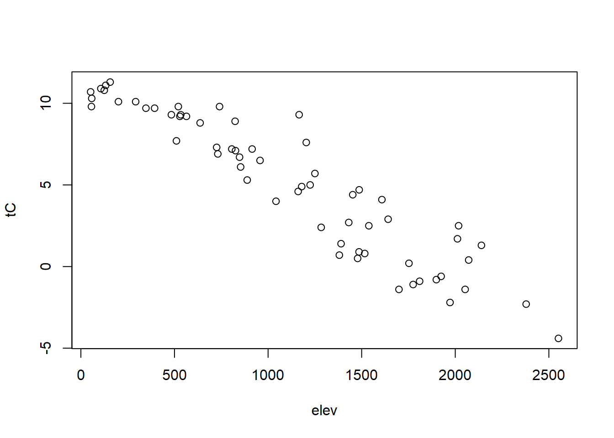
FIGURE 9.7: Scatter plot illustrating negative correlation
## [1] -0.9357801## [1] 0.8756845While you don’t need to use this, since the cor function is easier to type, it’s interesting to know that the formula for Pearson’s correlation coefficient is something that you can actually code in R, taking advantage of its vectorization methods:
\[ r = \frac{\sum{(x_i-\overline{x})(y_i-\overline{y})}}{\sqrt{\sum{(x_i-\overline{x})^2\sum(y_i-\overline{y})^2}}} \]
## [1] -0.9357801## [1] 0.8756845Another version of the formula runs faster, so might be what R uses, but you’ll never notice the time difference:
\[ r = \frac{n(\sum{xy})-(\sum{x})(\sum{y})}{\sqrt{(n\sum{x^2}-(\sum{x})^2)(n\sum{y^2}-(\sum{y})^2)}} \]
n <- length(elev)
r <- (n*sum(elev*tC)-sum(elev)*sum(tC))/
sqrt((n*sum(elev^2)-sum(elev)^2)*(n*sum(tC^2)-sum(tC)^2))
r## [1] -0.9357801## [1] 0.8756845… and as you can see, all three methods give the same results.
9.3.1 Displaying correlation in a pairs plot
We can use another type of pairs plot from the psych package to look at the correlation coefficient in the upper-right part of the pairs plot, since correlation can be determined between x and y or y and x; the result is the same. In contrast to what we’ll see in regression models, there doesn’t have to be one explanatory (or independent) variable and one response (or dependent) variable; either one will do. The r value shows both the direction (positive or negative) and the magnitude of the correlation, with values closer to 1 or -1 being more correlated (Figure 9.8).
library(psych)
sierraFeb %>%
dplyr::select(ELEVATION:TEMPERATURE) %>%
pairs.panels(method = "pearson", # correlation method
hist.col = "#00AFBB",
density = TRUE, # show density plots
ellipses = F, smooth = F) # unneeded 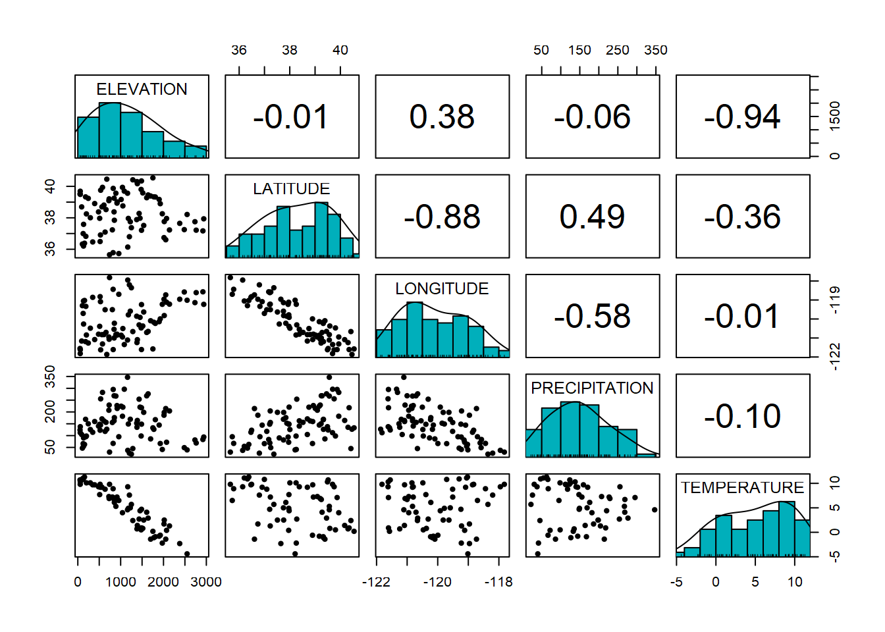
FIGURE 9.8: Pairs plot with r values
We can clearly see in the graphs the negative relationships between elevation and temperature and between latitude and longitude (what is that telling us?), and these correspond to strongly negative correlation coefficients.
One problem with Pearson: While there’s nothing wrong with the correlation coefficient, Pearson’s name, along with some other pioneers of statistics like Fisher, is tainted by an association with the racist field of eugenics. But the mathematics is not to blame, and the correlation coefficient is still as useful as ever. Maybe we can just say that Pearson discovered the correlation coefficient…
9.4 Statistical Tests
Tests that compare our data to other data or look at relationships among variables are important statistical methods, and you should refer to statistical references to best understand how to apply the appropriate methods for your research.
9.4.1 Comparing samples and groupings with a t test and a non-parametric Kruskal-Wallis Rank Sum test
A common need in environmental research is to compare samples of a phenomenon (e.g. Figure 9.9) or compare samples with an assumed standard population. The simplest application of this is the t-test, which can only involve comparing two samples or one sample with a population. After this, we’ll look at analysis of variance, extending this to allow for more than two groups. Start by building XSptsPheno from code in the Histogram section (4.3.1) of the Visualization chapter, then proceed:

FIGURE 9.9: NDVI by phenology
##
## Welch Two Sample t-test
##
## data: NDVI by phenology
## t = 5.4952, df = 52.03, p-value = 1.19e-06
## alternative hypothesis: true difference in means between group growing and group senescent is not equal to 0
## 95 percent confidence interval:
## 0.1421785 0.3057412
## sample estimates:
## mean in group growing mean in group senescent
## 0.5901186 0.3661588One condition for using a t test is that our data is normally distributed. While these data sets appear reasonably normal, though with a bit of bimodality especially for the senescent group, the Shapiro-Wilk test (which uses a null hypothesis of normal) has a p value < 0.05 for the senescent group, so the data can’t be assumed to be normal.
##
## Shapiro-Wilk normality test
##
## data: XSptsPheno$NDVI[XSptsPheno$phenology == "growing"]
## W = 0.93608, p-value = 0.07918##
## Shapiro-Wilk normality test
##
## data: XSptsPheno$NDVI[XSptsPheno$phenology == "senescent"]
## W = 0.88728, p-value = 0.004925Therefore we should use a non-parametric alternative such as the Kruskal-Wallis Rank Sum test:
##
## Kruskal-Wallis rank sum test
##
## data: NDVI by phenology
## Kruskal-Wallis chi-squared = 19.164, df = 1, p-value = 1.199e-05A bit of a review on significance tests and p values
First, each type of test will be testing a particular summary statistic, like the t test is comparing means and the analysis of variance will be comparing variances. In confirmatory statistical tests, you’re always seeing if you can reject the null hypothesis that there’s no difference, so in the t test or the rank sum test above that compares two samples, it’s that there’s no difference between two samples.
There will of course nearly always be some difference, so you might think that you’d always reject the null hypothesis that there’s no difference. That’s where random error and probability comes in. You can accept a certain amount of error – say 5% – to be able to say that the difference in values could have occurred by chance. That 5% or 0.05 is often called the “significance level” and is the probability of the two values being the same that you’re willing to accept. (The remainder 0.95 is often called the confidence level, the extent to which you’re confident that rejecting the null hypothesis and accepting the working hypothesis is correct.)
When R reports the p (or Pr) probability value, you compare that value to that significance level to see if it’s lower, and then use that to possibly reject the null hypothesis and accept the working hypothesis. R will simply report the p value and commonly show asterisks along with it to indicate if it’s lower than various common significance levels, like 0.1, 0.05, 0.01, and 0.001.
9.4.1.1 Runoff and Sediment Yield under Eucalyptus vs Oaks – is there a difference?
Starting with the Data Abstraction chapter, one of the data sets we’ve been looking at is from a study of runoff and sediment yield under paired eucalyptus and coast live oak sites, and we might want to analyze this data statistically to consider some basic research questions. These are discussed at greater length in Thompson et al. (2016), but the key questions are:
- Is the runoff under eucalyptus canopy significantly different from that under oaks?
- Is the sediment yield under eucalyptus canopy significantly different from that under oaks?
We’ll start with the first, since this was the focus on the first part of the study where multiple variables that influence runoff were measured, such as soil hydrophobicity resulting from the chemical effects of eucalyptus, and any rainfall contrasts at each site and between sites. For runoff, we’ll then start by test for normality of each of the two samples (euc and oak) which shows clearly that both samples are non-normal.
##
## Shapiro-Wilk normality test
##
## data: tidy_eucoak$runoff_L[tidy_eucoak$tree == "euc"]
## W = 0.74241, p-value = 4.724e-11##
## Shapiro-Wilk normality test
##
## data: tidy_eucoak$runoff_L[tidy_eucoak$tree == "oak"]
## W = 0.71744, p-value = 1.698e-11So we might apply the non-parametric Kruskal-Wallis test …
##
## Kruskal-Wallis rank sum test
##
## data: runoff_L by tree
## Kruskal-Wallis chi-squared = 2.2991, df = 1, p-value = 0.1294… and no significant difference can be seen. If we look at the data graphically, this makes sense, since the distributions are not dissimilar (Figure 9.10).
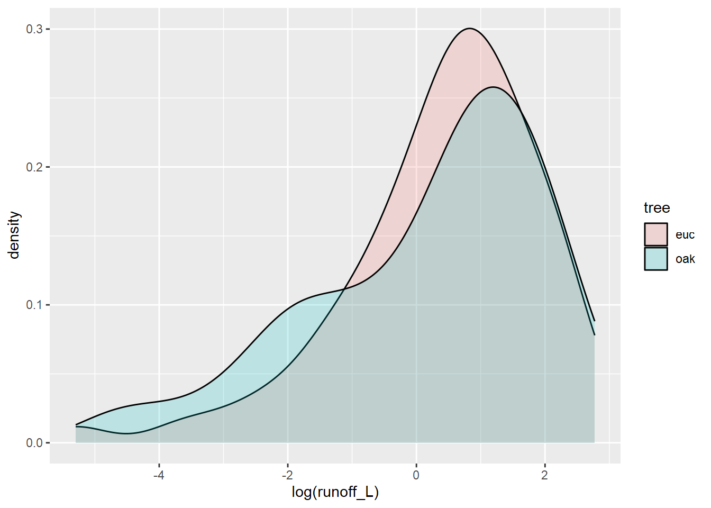
FIGURE 9.10: Runoff under eucalyptus and oak in Bay Area sites
However, some of this may result from major variations among sites, which is apparent in a site-grouped boxplot (Figure 9.11).

FIGURE 9.11: Runoff at various sites contrasting euc and oak
We might restrict our analysis to Tilden Park sites in the East Bay, where there’s more of a difference (Figure 9.12), but the sample size is very small.
tilden <- tidy_eucoak %>% filter(str_detect(tidy_eucoak$site,"TP"))
tilden %>%
ggplot(aes(log(runoff_L),fill=tree)) +
geom_density(alpha=0.2)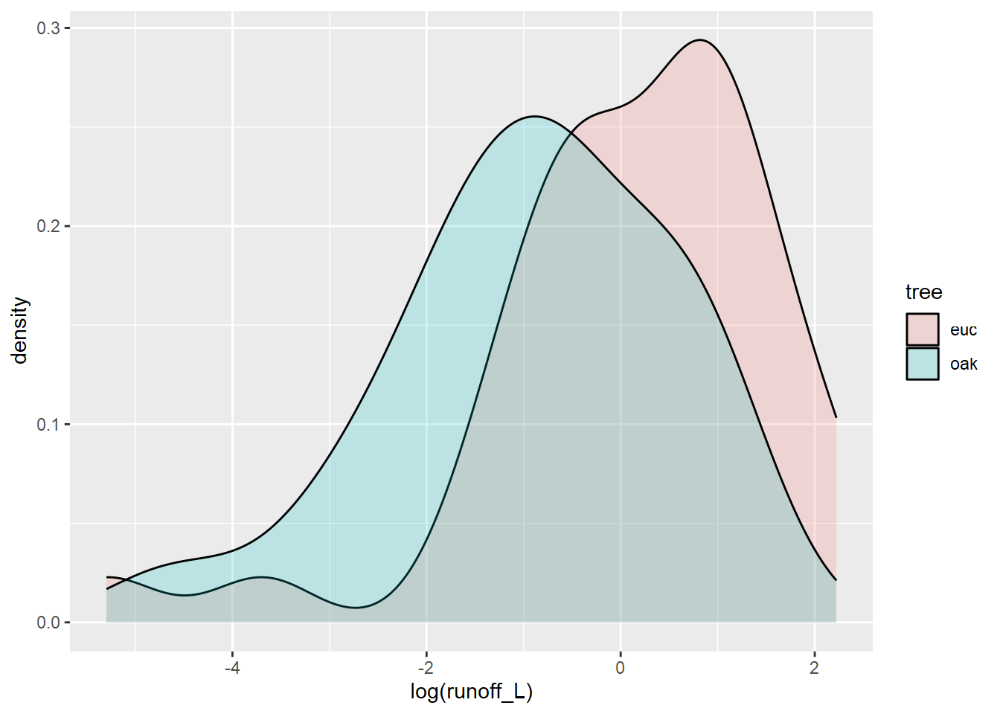
FIGURE 9.12: East Bay sites
##
## Shapiro-Wilk normality test
##
## data: tilden$runoff_L[tilden$tree == "euc"]
## W = 0.73933, p-value = 1.764e-07##
## Shapiro-Wilk normality test
##
## data: tilden$runoff_L[tilden$tree == "oak"]
## W = 0.59535, p-value = 8.529e-10So once again, as is common with small sample sets, we need a non-parametric test.
##
## Kruskal-Wallis rank sum test
##
## data: runoff_L by tree
## Kruskal-Wallis chi-squared = 14.527, df = 1, p-value = 0.0001382Sediment Yield
In the year runoff was studied, there were no runoff events sufficient to mobilize sediments. The next year, January had a big event, so we collected sediments and processed them in the lab.
From the basic sediment yield question listed above we can consider two variants:
- Is there a difference between eucs and oaks in terms of fine sediment yield?
- Is there a difference between eucs and oaks in terms of total sediment yield? (includes litter)
So here, we will need to extract fine and total sediment yield from the data and derive group statistics by site (Figure 9.13). As usual, we’ll use a faceted density plot to visualize the distributions (Figure 9.14). Then we’ll run the test.
## id site trtype slope bulkDensity
## Length :14 Length :14 Length :14 Min. : 9.00 Min. :0.960
## N.unique :14 N.unique : 7 N.unique : 2 1st Qu.:12.00 1st Qu.:1.060
## N.blank : 0 N.blank : 0 N.blank : 0 Median :21.00 Median :1.125
## Min.nchar: 5 Min.nchar: 3 Min.nchar: 3 Mean :20.04 Mean :1.156
## Max.nchar: 5 Max.nchar: 3 Max.nchar: 3 3rd Qu.:25.00 3rd Qu.:1.245
## Max. :32.00 Max. :1.490
##
## litter Jan08rain mean_runoff_ratio med_runoff_ratio
## Min. : 25.00 Min. :228.1 Min. :0.00450 Min. :0.00000
## 1st Qu.: 51.25 1st Qu.:290.8 1st Qu.:0.02285 1st Qu.:0.01105
## Median : 77.00 Median :301.1 Median :0.04835 Median :0.04950
## Mean : 76.64 Mean :298.5 Mean :0.06679 Mean :0.06179
## 3rd Qu.: 95.75 3rd Qu.:317.0 3rd Qu.:0.12172 3rd Qu.:0.09492
## Max. :135.00 Max. :328.5 Max. :0.16480 Max. :0.16430
##
## std_runoff_ratio fines_g litter_g total_g
## Min. :0.01070 Min. : 7.50 Min. :14.00 Min. : 23.50
## 1st Qu.:0.01642 1st Qu.:13.30 1st Qu.:18.80 1st Qu.: 35.00
## Median :0.02740 Median :18.10 Median :40.40 Median : 60.50
## Mean :0.04355 Mean :27.77 Mean :41.32 Mean : 69.12
## 3rd Qu.:0.05735 3rd Qu.:45.00 3rd Qu.:57.50 3rd Qu.: 95.50
## Max. :0.11480 Max. :66.70 Max. :97.80 Max. :125.90
## NAs :1 NAs :1 NAs :1
## fineTotalRatio fineRainRatio
## Min. :0.1300 Min. :0.025
## 1st Qu.:0.2700 1st Qu.:0.044
## Median :0.3900 Median :0.064
## Mean :0.3715 Mean :0.097
## 3rd Qu.:0.4900 3rd Qu.:0.141
## Max. :0.5500 Max. :0.293
## NAs :1 NAs :1eucoaksed %>%
group_by(trtype) %>%
summarize(meanfines = mean(fines_g, na.rm=T), sdfines = sd(fines_g, na.rm=T),
meantotal = mean(total_g, na.rm=T), sdtotal = sd(total_g, na.rm=T))## # A tibble: 2 × 5
## trtype meanfines sdfines meantotal sdtotal
## <chr> <dbl> <dbl> <dbl> <dbl>
## 1 euc 14.2 3.50 48.6 35.0
## 2 oak 39.4 20.4 86.7 26.2eucoakLong <- eucoaksed %>%
pivot_longer(col=c(fines_g,litter_g),
names_to = "sed_type",
values_to = "sed_g")
eucoakLong %>%
ggplot(aes(trtype, sed_g, col=sed_type)) +
geom_boxplot()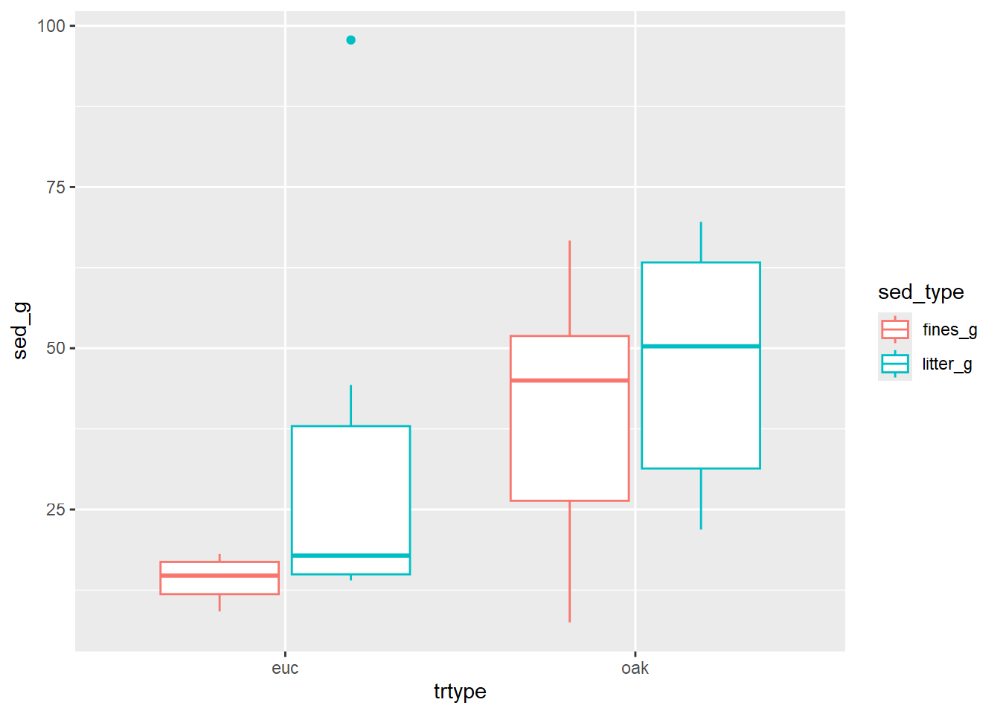
FIGURE 9.13: Eucalyptus and oak sediment runoff box plots
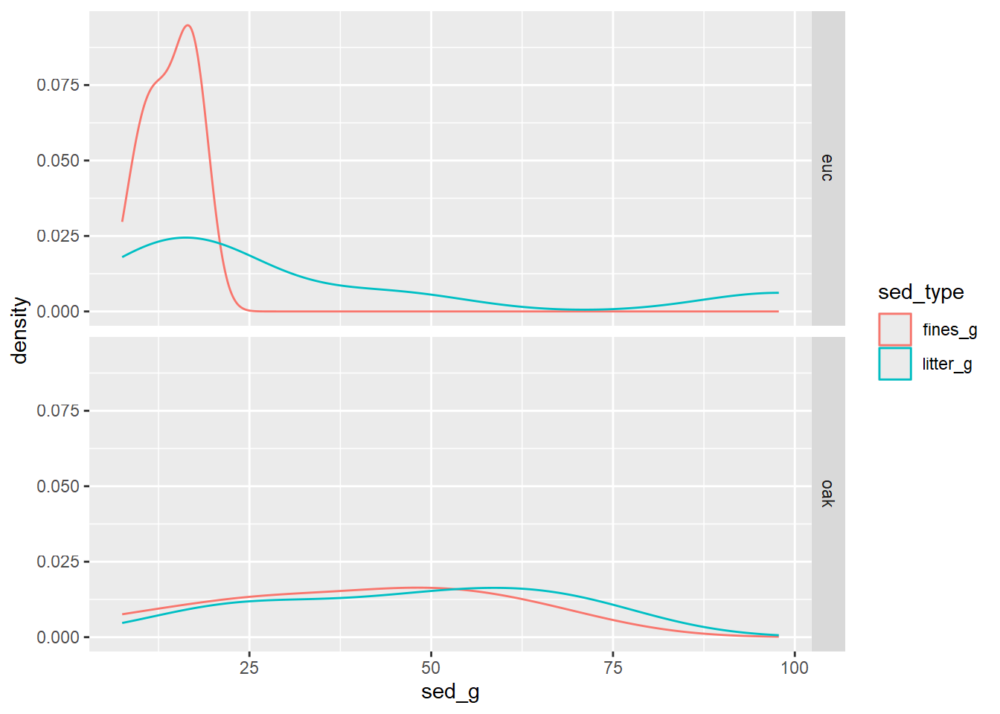
FIGURE 9.14: Facet density plot of eucalyptus and oak sediment runoff
Tests of euc vs oak based on fine sediments:
shapiro.test(eucoaksed$fines_g[eucoaksed$trtype == "euc"])
shapiro.test(eucoaksed$fines_g[eucoaksed$trtype == "oak"])
t.test(fines_g~trtype, data=eucoaksed) ##
## Shapiro-Wilk normality test
##
## data: eucoaksed$fines_g[eucoaksed$trtype == "euc"]
## W = 0.9374, p-value = 0.6383##
## Shapiro-Wilk normality test
##
## data: eucoaksed$fines_g[eucoaksed$trtype == "oak"]
## W = 0.96659, p-value = 0.8729##
## Welch Two Sample t-test
##
## data: fines_g by trtype
## t = -3.2102, df = 6.4104, p-value = 0.01675
## alternative hypothesis: true difference in means between group euc and group oak is not equal to 0
## 95 percent confidence interval:
## -44.059797 -6.278299
## sample estimates:
## mean in group euc mean in group oak
## 14.21667 39.38571Tests of euc vs oak based on total sediments:
shapiro.test(eucoaksed$total_g[eucoaksed$trtype == "euc"])
shapiro.test(eucoaksed$total_g[eucoaksed$trtype == "oak"])
kruskal.test(total_g~trtype, data=eucoaksed) ##
## Shapiro-Wilk normality test
##
## data: eucoaksed$total_g[eucoaksed$trtype == "euc"]
## W = 0.76405, p-value = 0.02725##
## Shapiro-Wilk normality test
##
## data: eucoaksed$total_g[eucoaksed$trtype == "oak"]
## W = 0.94988, p-value = 0.7286##
## Kruskal-Wallis rank sum test
##
## data: total_g by trtype
## Kruskal-Wallis chi-squared = 3.449, df = 1, p-value = 0.06329So we used a t test for the fines_g, and the test suggests that there’s a significant difference in sediment yield for fines, but the Kruskal-Wallis test on total sediment (including litter) did not show a significant difference. Both results support the conclusion that oaks in this study produced more soil erosion, largely because the Eucalyptus stands generate so much litter cover, and that litter also made the total sediment yield not significantly different. See Thompson et al. (2016) for more information on this study and its conclusions.
9.4.2 Analysis of variance
The purpose of analysis of variance (ANOVA) is to compare groups based upon continuous variables. It can be thought of as an extension of a t test where you have more than two groups, or as a linear model where one variable is a factor. In a confirmatory statistical test, you’ll want to see if you can reject the null hypothesis that there’s no difference between the within-sample variances and the between-sample variances.
- The response variable is a continuous variable
- The explanatory variable is the grouping – categorical (a factor in R)
From a study of a karst system in Tennessee (Davis and Brook 1993), we might ask the question:
Are water samples from streams draining sandstone, limestone, and shale (Figure 9.15) different based on solutes measured as total hardness (TH)?
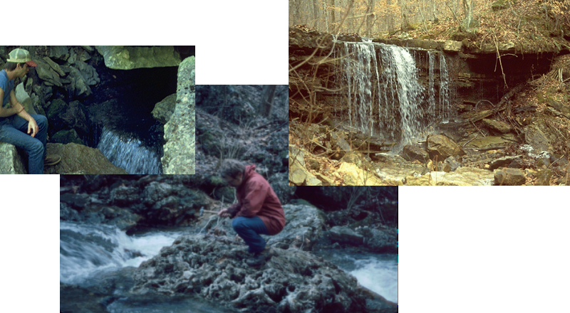
FIGURE 9.15: Water sampling in varying lithologies in a karst area
We can look at this spatially (Figure 9.16) as well as by variables graphically (Figure 9.17).
library(igisci)
library(sf); library(tidyverse); library(readxl); library(tmap); library(terra)
wChemData <- read_excel(ex("SinkingCove/SinkingCoveWaterChem.xlsx")) %>%
mutate(siteLoc = str_sub(Site,start=1L, end=1L))
wChemTrunk <- wChemData %>% filter(siteLoc == "T") %>% mutate(siteType = "trunk")
wChemDrip <- wChemData %>% filter(siteLoc %in% c("D","S")) %>% mutate(siteType = "dripwater")
wChemTrib <- wChemData %>% filter(siteLoc %in% c("B", "F", "K", "W", "P")) %>%
mutate(siteType = "tributary")
wChemData <- bind_rows(wChemTrunk, wChemDrip, wChemTrib)
wChemData$siteType <- factor(wChemData$siteType)
wChemData$Lithology <- factor(wChemData$Lithology)
sites <- read_csv(ex("SinkingCove/SinkingCoveSites.csv"))
wChem <- wChemData %>%
left_join(sites, by = c("Site" = "site")) %>%
st_as_sf(coords = c("longitude", "latitude"), crs = 4326)
tmap_mode("plot")
DEM <- rast(ex("SinkingCove/DEM_SinkingCoveUTM.tif"))
slope <- terrain(DEM, v='slope')
aspect <- terrain(DEM, v='aspect')
hillsh <- shade(slope/180*pi, aspect/180*pi, 40, 330)
bounds <- tmaptools::bb(wChem, ext=1.1)
hillshCol <- tm_scale_continuous(values = "-brewer.greys")
terrainCol <- tm_scale_continuous(values = terrain.colors(9))
tm_graticules(labels.cardinal=F) +
tm_shape(hillsh,bbox=bounds) +
tm_raster(col.scale=hillshCol, col.legend = tm_legend(show=F)) +
tm_shape(DEM) +
tm_raster(col.scale=terrainCol, col_alpha=0.5,col.legend = tm_legend(show=F)) +
tm_shape(wChem) +
tm_symbols(size="TH",
fill="Lithology",
tm_scale_continuous(values=c(0.2,2)),
shape="siteType",
tm_legend(frame=F)) +
tm_title("Upper Sinking Cove")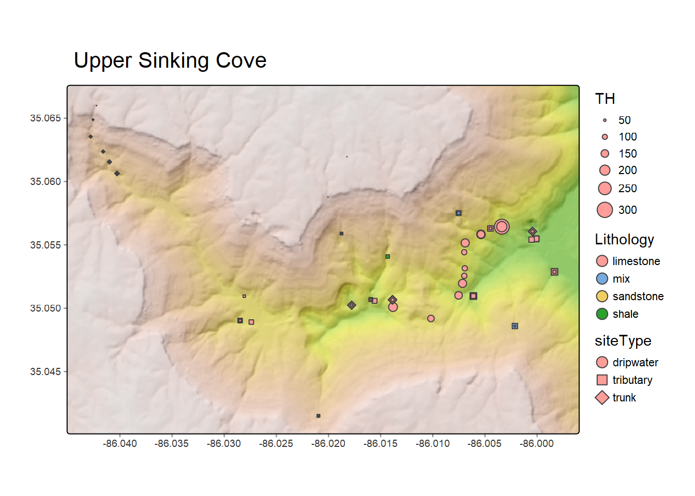
FIGURE 9.16: Total hardness from dissolved carbonates at water sampling sites in Upper Sinking Cove, TN
Before we run the analysis of variance tests, we’ll look at the data in another visual way, with histograms of total hardness, colored by site type, and faceted by lithology. We can already see that the groups are quite distinct, so there’ll be no surprises revealed in the analysis of variance.
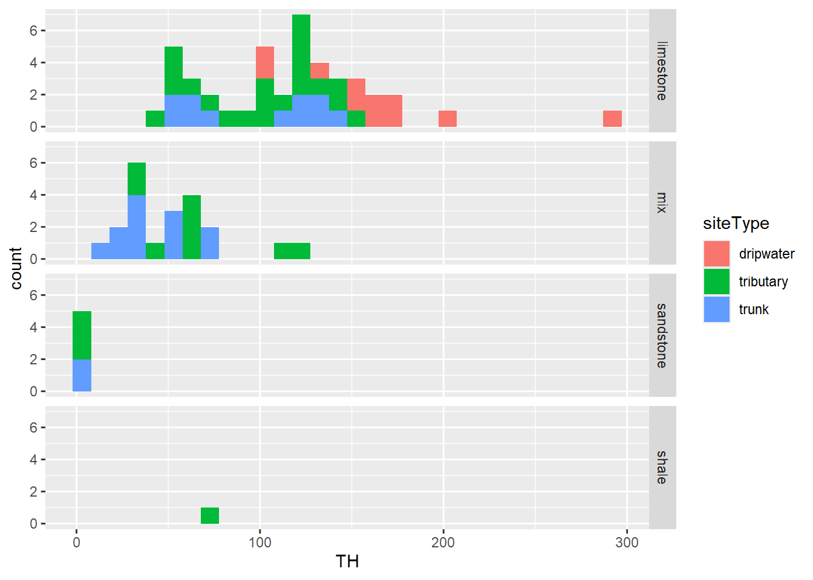
FIGURE 9.17: Sinking Cove dissolved carbonates as total hardness by lithology
Analysis of Variance: An analysis of variance is run the same way as a linear model, and in fact you can sometimes use lm() instead of aov(), but the latter has advantages when checking the assumptions required for the model. Then the anova() function just displays the Analysis of Variance table, but you can see the same thing with summary(). You’ll find practitioners vary in their practice, so it can be confusing. We’ll start with deriving the model for total hardness to assess the factor siteType.
## Analysis of Variance Table
##
## Response: TH
## Df Sum Sq Mean Sq F value Pr(>F)
## siteType 2 79172 39586 20.59 1.071e-07 ***
## Residuals 67 128815 1923
## ---
## Signif. codes: 0 '***' 0.001 '**' 0.01 '*' 0.05 '.' 0.1 ' ' 1## Df Sum Sq Mean Sq F value Pr(>F)
## siteType 2 79172 39586 20.59 1.07e-07 ***
## Residuals 67 128815 1923
## ---
## Signif. codes: 0 '***' 0.001 '**' 0.01 '*' 0.05 '.' 0.1 ' ' 1So it seems that grouping by siteType is significant. To consider the validity of assumptions, we’ll start by checking that the variances are homogeneous, required for analysis of variance. This can be tested by looking for any relationship between residuals and fitted values, using the base plot system that knows what to do for this type of model, with option 1 plotting residuals against fitted values.
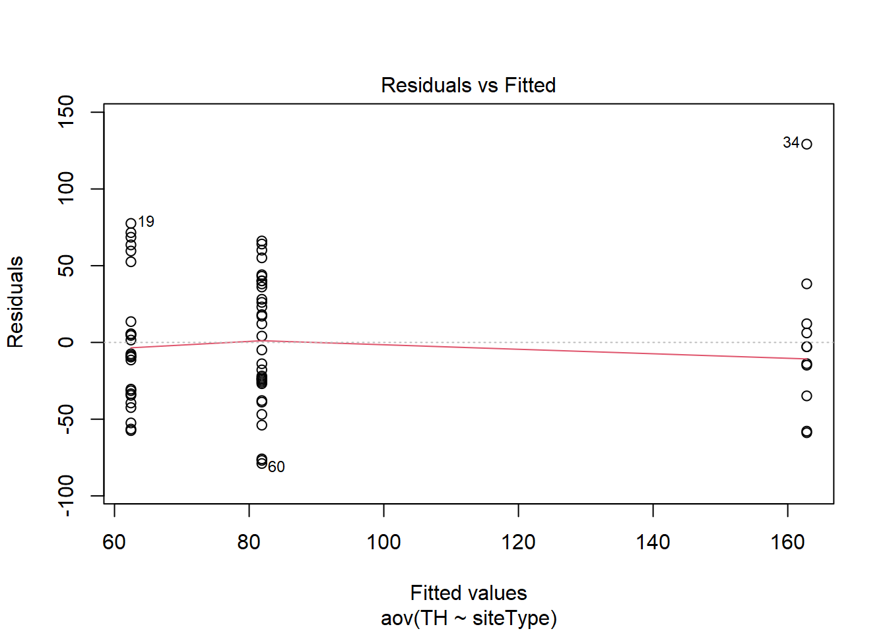
So that looks good, with no apparent relationship. Then we’ll check for normality of residuals with a Q-Q plot, option 2 when plotting this type of model. It should approximate a straight line, which it does reasonably well.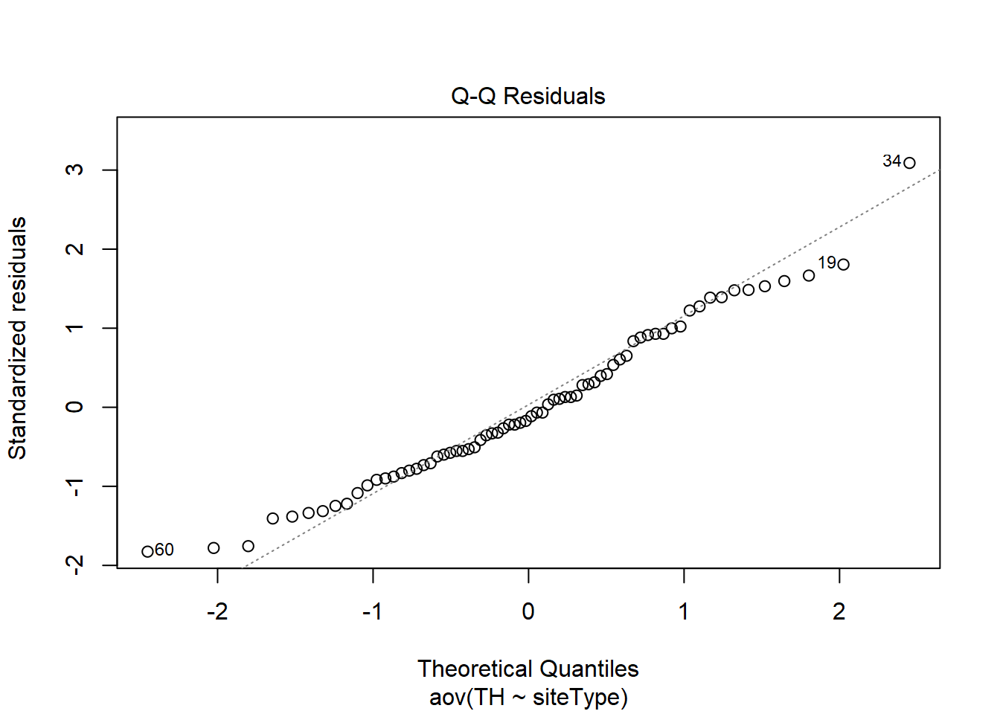
9.4.3 Post-Hoc Analysis of Variance with Tukey’s Test
“Post-Hoc Analysis” refers to analyzing a model that has been created, and one method for this with an analysis of variance model is the Tukey “Honest Significant Difference” method provided by the base R function TukeyHSD(). This is from the same John Tukey who we looked at earlier as a promoter of exploratory data analysis including visualization methods such as the Tukey boxplot.
One thing the TukeyHSD() function does is compare all group pairings. If you only have two groups, the form of the output will look the same, but we have three groups, so let’s see what it shows. To run the test, we just provide our analysis of variance model aov_THsite to the function TukeyHSD(), with a confidence level.
## Tukey multiple comparisons of means
## 95% family-wise confidence level
##
## Fit: aov(formula = TH ~ siteType, data = wChemData)
##
## $siteType
## diff lwr upr p adj
## tributary-dripwater -80.93583 -117.39136 -44.480301 0.0000038
## trunk-dripwater -100.37818 -138.40394 -62.352427 0.0000001
## trunk-tributary -19.44235 -47.13149 8.246788 0.2191791And here we see a surprise (though it shouldn’t really be a surprise if we look at the data): while dripwater is distinct from the other two, there’s no significant difference between trunk and tributary samples. This shouldn’t be a surprise since both trunk and tributary sources are flowing streams, while the dripwaters come from soils above via bedrock where they’re dissolving the calcium carbonate.
We’ll do the same thing for the geology (or more specifically, lithology, which is rock type).
## Analysis of Variance Table
##
## Response: TH
## Df Sum Sq Mean Sq F value Pr(>F)
## Lithology 3 98107 32702 19.643 3.278e-09 ***
## Residuals 66 109881 1665
## ---
## Signif. codes: 0 '***' 0.001 '**' 0.01 '*' 0.05 '.' 0.1 ' ' 1This grouping also appears significant, but let’s also try the TukeyHSD test:
## Tukey multiple comparisons of means
## 95% family-wise confidence level
##
## Fit: aov(formula = TH ~ Lithology, data = wChemData)
##
## $Lithology
## diff lwr upr p adj
## mix-limestone -65.76523 -94.39604 -37.134411 0.0000004
## sandstone-limestone -110.86047 -161.67512 -60.045808 0.0000015
## shale-limestone -38.86047 -147.64815 69.927216 0.7826397
## sandstone-mix -45.09524 -98.61074 8.420267 0.1281941
## shale-mix 26.90476 -83.17039 136.979916 0.9171930
## shale-sandstone 72.00000 -45.80894 189.808935 0.3796721That shows something useful: the only pairing that is significantly distinct is between sandstone and limestone. This is also not surprising because all of the sandstone is on the caprock so there’s no direct source of carbonates and none from upstream.
Again considering assumptions, for homogeneity of variances, there’s no apparent relationship between residuals and fitted values:
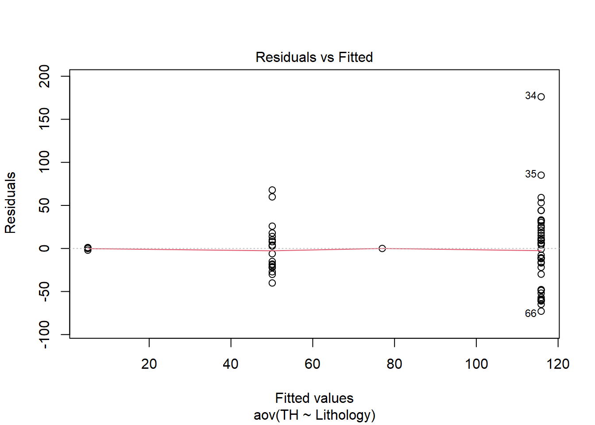
And the Q-Q plot’s reasonable approximation of a straight line supports the assumption that the residuals are normally distributed.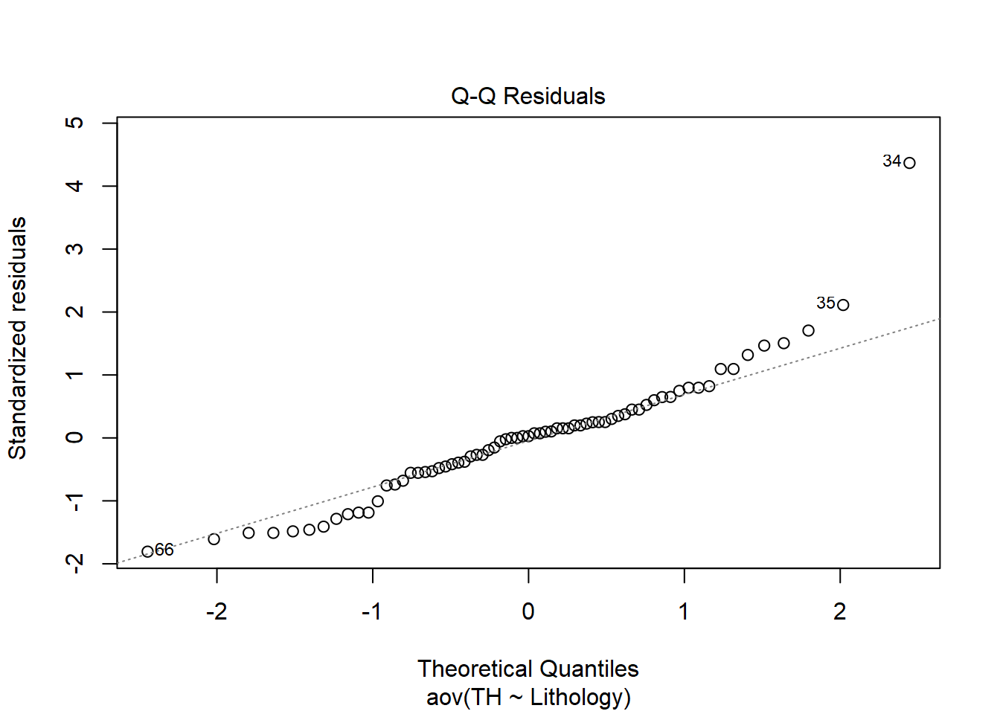
Some observations and caveats from the above:
- There’s pretty clearly a difference between surface waters (trunk and tributary) and cave dripwaters (from stalactites) in terms of solutes. Analysis of variance simply confirms the obvious.
- There’s also pretty clearly a difference among lithologies on the basis of solutes, not surprising since limestone is much more soluble than sandstones. Similarly, analysis of variance confirms the obvious.
- The data may not be sufficiently normally distributed, and limestone hardness values are bimodal (largely due to the inaccessibility of waters in the trunk cave passages traveling 2 km through the Bangor limestone 2), though analysis of variance may be less sensitive to this than a t test.
- While shale creates springs, shale strata are very thin, with most of them in the “mix” category, or form the boundary between the two major limestone formations. Tributary streams appear to cross the shale in caves that were inaccessible for sampling. We visually confirmed this in one cave, but this exploration required some challenging rappel work to access, so we were not able to sample.
- The geologic structure here is essentially flat, with sandstones on the plateau surface and the most massive limestones – the Bangor and Monteagle limestones – all below 400 m elevation (Figure 9.18).
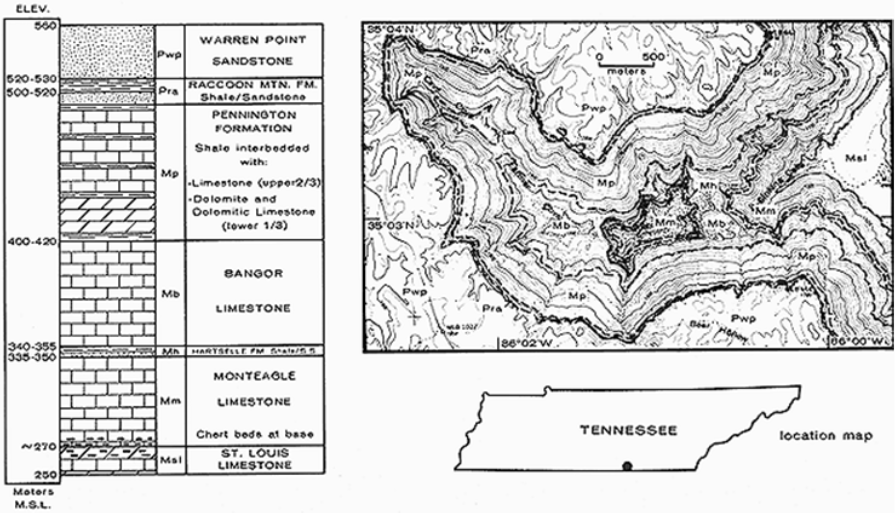
FIGURE 9.18: Upper Sinking Cove (Tennessee) stratigraphy
- While the rapid increase in solutes happens when Cave Cove Creek starts draining through the much more soluble limestone until it reaches saturation, the distance traveled by the water (reflected by a drop in elevation) can be seen (Figure 9.19).
wChemData %>%
ggplot(aes(x=Elevation, y=TH, col=Lithology)) +
geom_point() +
geom_smooth(method= "lm")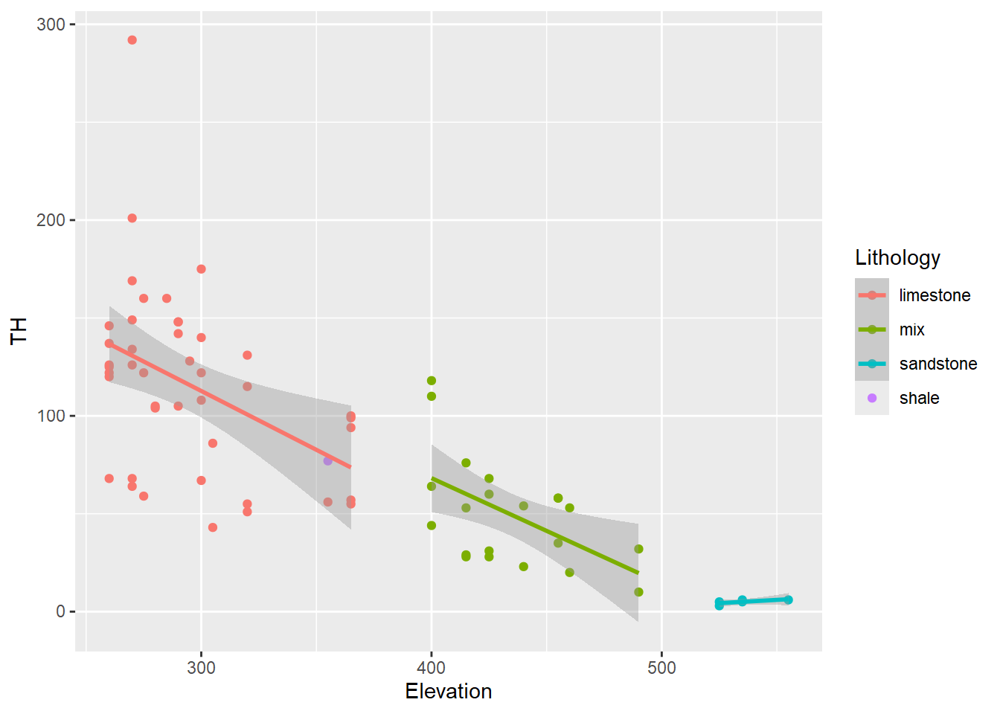
FIGURE 9.19: Sinking Cove dissolved carbonates as TH and elevation by lithology
As with other topics in these statistical chapters, there’s a lot more to learn, but fortunately there are many resources on statistical methods, since they cut across so many sciences. A more thorough coverage of the use of the one-way ANOVA test can be found at http://www.sthda.com/english/wiki/one-way-anova-test-in-r. There’s also an example applied to the palmerpenguins data set we’ve used before, in this blog: https://statsandr.com/blog/anova-in-r and many others.
9.4.4 Testing a correlation
We earlier looked at the correlation coefficient r. One test we can do is to see whether that correlation is significant:
##
## Pearson's product-moment correlation
##
## data: sierraFeb$TEMPERATURE and sierraFeb$ELEVATION
## t = -20.558, df = 60, p-value < 2.2e-16
## alternative hypothesis: true correlation is not equal to 0
## 95 percent confidence interval:
## -0.9609478 -0.8952592
## sample estimates:
## cor
## -0.9357801So we can reject the null hypothesis that the correlation is equal to zero: the probability of getting a correlation of -0.936 is less than \(2.2\times 10^{-16}\) and thus the “true correlation is not equal to 0”. So we can accept an alternative working hypothesis that they’re negatively correlated, and that – no surprise – it gets colder as we go to higher elevations, at least in February in the Sierra, where our data come from.
In the next chapter, we’ll use this data to develop a linear model and get a similar result comparing the slope of the model predicting temperature from elevation…
9.4.5 Additional resources
As you might expect, there are lots of good statistical references based on R.
One book also published at bookdown.org is Paula Moraga’s Spatial Statistics for Data Science (2023) available at https://www.paulamoraga.com/book-spatial/index.html.
9.5 Exercises: Statistics
Exercise 9.1 Build a soilvegJuly data frame.
- Create a new RStudio project named Meadows.
- Create a soilveg tibble from “meadows/SoilVegSamples.csv” in the extdata.
- Have a look at this data frame and note that there is NA for SoilMoisture and NDVI for 8 of the records. These represent observations made in August, while the rest are all in July. While we have drone imagery and thus NDVI for these sites, as they are during the senescent period we don’t want to compare these with the July samples.
- Filter the data frame to only include records that are not NA (see 3.4.2.1) for SoilMoisture, and assign that to a new data frame
soilvegJuly.
Exercise 9.2 Visualizations:
Using graphical methods you learned in Chapter 4:
- Create a scatter plot of Soil Moisture vs NDVI, colored by veg (the three-character abbreviation of major vegetation types –
CARfor Carex/sedge,JUNfor Juncus/rush,GRAfor mesic grasses and forbs, andUPLfor more elevated (maybe by a meter) areas of sagebrush), forsoilvegJuly. What we can see is that this is a small sample. This study involved a lot of drone imagery, probably 100s of GB of imagery, which was the main focus of the study – to detect channels – but a low density of soil and vegetation ground samples. - Create a histogram of soil moisture colored by veg, also for the July data. We see the same story, with not very many samples, though suggestive of a multimodal distribution overall.
- Create a density plot of the same, using alpha = 0.5 to see everything with transparency.
You can also use DominantVegetation, for this and the next question. The results may be a bit different.
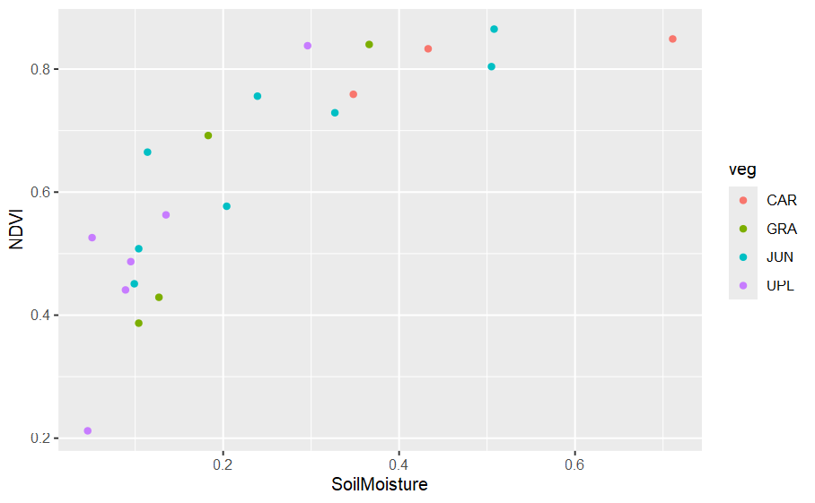
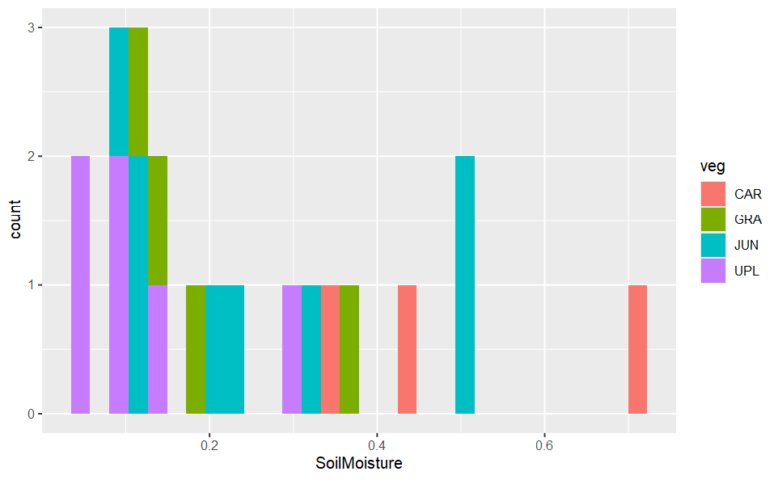
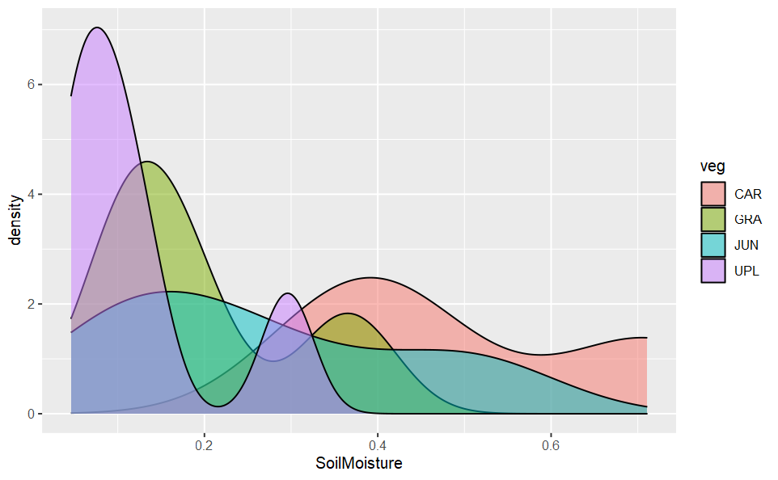
Exercise 9.3 Tests, July data
Using methods from 9.4.2, run an analysis of variance test of soil moisture ~ veg. Remember to specify the data, which should be just the July data., then do the same test for NDVI ~ veg. Interpret the results in a markdown section.
Exercise 9.4 Meadow differences
- Now compare the meadows based on soil moisture in July, using a boxplot
- Then run an ANOVA test on this meadow grouping
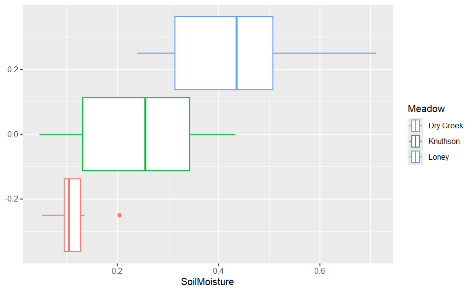
Exercise 9.5 For the meadow data, create a pairs plot to find which variables are correlated along with their r values, and test the significance of that correlation and provide percentage of variation of one variable is explained by that of the other.
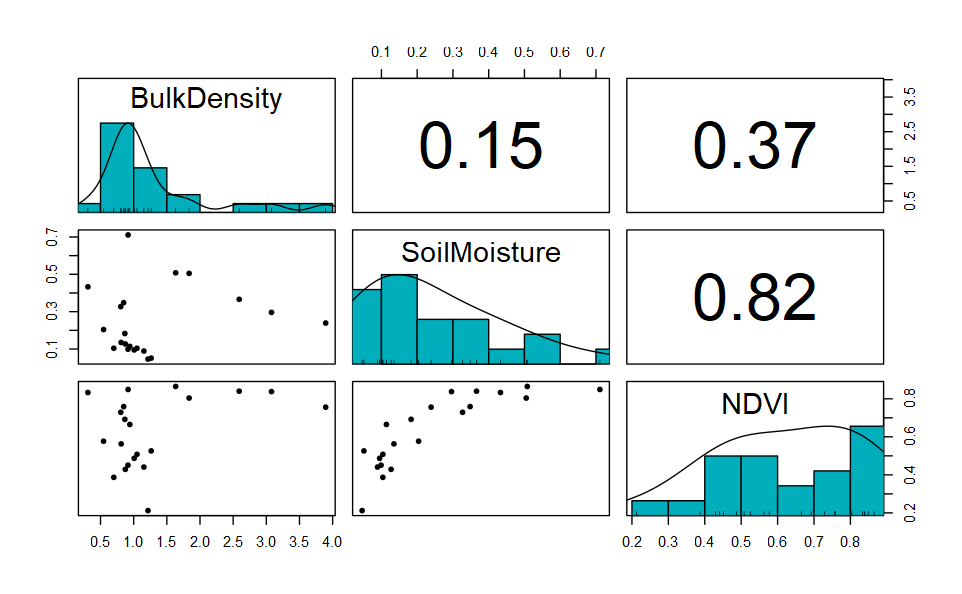
Exercise 9.6 Bulk density test, all data
We’ll now look at bulk density for all samples (soilveg), including both July and August. Soil moisture and NDVI won’t be a part of this analysis, only bulk density and vegetation. Look at the distribution of all bulk density values, using both a histogram with 20 bins and a density plot, then run an ANOVA test of bulk density predicted by (~) veg. What does the Pr(>F) value indicate?
Exercise 9.7 Carex or not?
Derive a bulkDensityCAR data frame by mutating a new variable CAR derived as a boolean result of veg == "CAR". This will group the vegetation points as either Carex or not, then use that in another ANOVA test to predict bulk density. What does the Pr(>F) value indicate?
References
We tried very hard to get into that cave that must extend from upper Cave Cove then under Farmer Cove to a spring in Wolf Cove – we have dye traces to prove it.↩︎